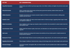

Geopolitical Shifts
Geopolitical Dynamics: Tensions, Trade, and Tactical Economies
Examines the evolving balance of power, trade alliances, and market-sensitive diplomacy shaping global economics.
This collection contains economic insights, visualizations, and market commentaries curated by GrandPi224.

A snapshot of current macroeconomic pressures, central bank signals, and implications for markets.
Examines the evolving balance of power, trade alliances, and market-sensitive diplomacy shaping global economics.

Explores the rising debt-to-GDP ratios, interest rate sensitivity, and fiscal sustainability challenges across developed markets.